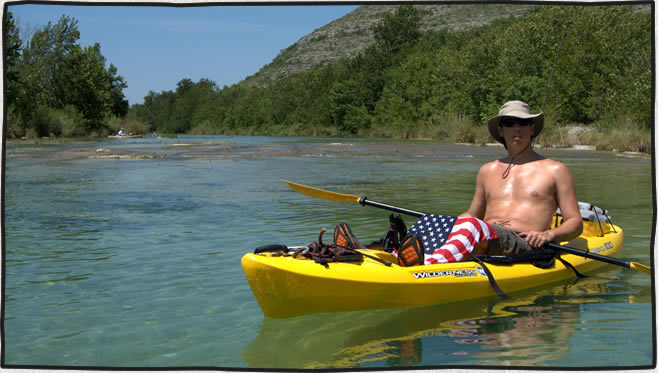

Devils River Kayaking, July 4th 2009
posted Jul 22, 2009 The first trip down the Devils River was so amazing I had to come back with more friends. This time we decided to brave July heat and headwinds. We put in the kayaks at Bakers Crossing on Friday, July 3rd. The next 2 days we covered 23 miles to our take out at Gerald Baily’s place, Devils River Outfitters.
 Devils River waterline
Devils River waterline
 Approaching our first nights camp around mile 9.
Approaching our first nights camp around mile 9.
 Our little island camp.
Our little island camp.
 Crystal clear waters of the Devils.
Crystal clear waters of the Devils.
 Sunrise on our seconds night’s island camp.
Sunrise on our seconds night’s island camp.
 One of the many bass caught along the way.
One of the many bass caught along the way.
Commenting is closed for this article.
Get in touch
Patrick [at] MountainDrawn.com